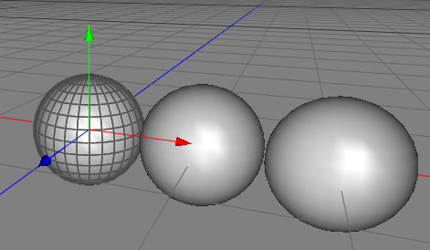

|
Array ModifierThe array modifier creates copies of the polygons in a polygon object. This can be very handy if you model a skyscarper for example. You probably don't want to model 20 floor manually. With the array modifier you only have to model one floor. The other 19 floors will be created automatically. But be carefull since that modifier can easily create objects with very high polygon counts.  Properties
|